Медиация — это способ урегулирования конфликтов с участием нейтрального посредника. Профессия медиатора востребована в сфере семейных, трудовых и гражданских споров. Мы составили рейтинг программ, где можно пройти профессиональную переподготовку и освоить навыки эффективной коммуникации, работы с участниками конфликта и проведения процедуры медиации. Обучение медиатора дистанционно проходит в удобном формате: слушателям предоставляется доступ к учебным материалам, практическим заданиям и поддержке тренеров-медиаторов. После успешного прохождения курсов выдается диплом установленного образца, подтверждающий получение дополнительных профессиональных компетенций.
Информация обновлена:
ТОП онлайн-курсов обучения по медиации
- 🏆 Медиация – Московский институт психологии (по промокоду onlinekursy скидка 🎁 10%)
- 🏆 Профессия медиатор – Московская Бизнес Академия
- 🏆 Медиация: альтернативные способы урегулирования конфликтов – НАДПО (по промокоду onlinekursy действует скидка 🎁 5%)
- Психологическое консультирование, конфликтология и медиация в социальной сфере – МИПО (по промокоду onlinekursy действует скидка 🎁 10% )
- Медиация – MITM
- Конфликтология и медиация: Эффективное управление конфликтами – НЦРДО (по промокоду onlinekursy действует скидка 🎁 5%)
- Юриспруденция и медиация – ИПО
- Медиация: альтернативные способы урегулирования конфликтов – ЦАППКК (по промокоду onlinekursy действует скидка 🎁 5%)
- Медиация: теория и практика эффективного разрешения конфликтов – Московская Бизнес Академия
- Медиация: альтернативные способы урегулирования конфликтов – НЦРДО (по промокоду onlinekursy действует скидка 🎁 5%)
- Медиация – АПОК
- Медиация – ЭКОДПО
Отличительные преимущества каждой дистанционной программы обучения по медиации
| № | Курс и школа | Отличительные преимущества | Ссылка |
|---|---|---|---|
| 🥇 | Медиация — МИП | Интервизии, супервизии, практическая работа на кейсах, 30% скидка до 15 июля | Перейти |
| 🥈 | Профессия медиатор – Московская Бизнес Академия | 45% скидка, диплом в ФРДО, карьерная поддержка, итоговый проект | Перейти |
| 🥉 | Медиация: альтернативные способы урегулирования конфликтов — НАДПО | Скидка 65%, 550 часов обучения, платформа для первых клиентов | Перейти |
| 4 | Психологическое консультирование, конфликтология и медиация – МИПО | Комплексная программа с психологией, до 818 часов, признание за рубежом | Перейти |
| 5 | Медиация – MITM | Интенсивный формат, возможность пройти за 2 месяца, возврат денег 14 дней | Перейти |
| 6 | Конфликтология и медиация – НЦРДПО | GR-технологии, поддержка HR, 950 часов, диплом в ФРДО | Перейти |
| 7 | Юриспруденция и медиация — ИПО | Правовой уклон, 972 часа, карьерное сопровождение, бонусные курсы | Перейти |
| 8 | Медиация – ЦАППКК | HR-наставник, сопровождение резюме, бессрочный доступ к курсу | Перейти |
| 9 | Медиация: теория и практика – Московская Бизнес Академия | Короткий курс 1.5 месяца, 70% практики, сертификат в ФРДО | Перейти |
| 10 | Медиация – НЦРДО | Индивидуальный учебный план, ускоренное обучение, доставка диплома | Перейти |
| 11 | Медиация – АПОК | Индивидуальные траектории, пересдача бесплатно, 3 тарифа: Эконом, Стандарт, VIP | Перейти |
| 12 | Медиация — ЭКОДПО | GR-технологии, три попытки экзамена, семейные и экономические конфликты | Перейти |
1. 🏆 Медиация — Московский институт психологии
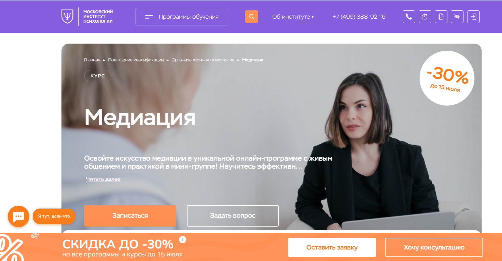
- ✅ Официальный сайт: mip.institute
- 💸 Цена: от 45 000 ₽ (со скидкой — 30%).
- 💳 Рассрочка: возможна,от 3 750 ₽/мес., уточняется при записи на курс.
- 📚 Формат: дистанционный формат обучения, видеоуроки, задания, демонстрационные сессии, обратная связь от преподавателей.
- ⏳ Продолжительность: 3 месяца (144 академических часа).
- 📜 Документ: удостоверение о повышении квалификации, выдается по окончанию курса.
- 📝 Трудоустройство: подготовка медиаторов с практическими навыками, востребованных на рынке.
- 🔷 Для кого подходит курс: для специалистов, HR, психологов, юристов, а также новичков, желающих освоить профессию медиатора дистанционно.
Особенности:
Обучение проходит в дистанционном формате с применением современных образовательных технологий. Программа выстроена таким образом, чтобы слушатели получали как теоретические знания, так и практический опыт ведения процедур медиации. После успешного прохождения курса студент получает диплом установленного образца, подтверждающий квалификацию. В учебный процесс включены интервизии, супервизии и групповая работа. Студенты осваивают методы урегулирования конфликтов и практикуются на кейсах, приближенных к реальной работе медиатора. Курс соответствует профессиональным стандартам и требованиям к подготовке специалистов.
Чему учатся студенты:
- Понимать структуру конфликтов и причины их возникновения
- Оценивать поведение участников конфликта
- Применять эффективные способы разрешения споров
- Контролировать эмоции в процессе медиации
- Выводить конфликт к взаимовыгодному решению
- Использовать методы ведения переговоров и медиативные техники
Преподаватели:
- Хаванский Сергей Николаевич — профессиональный медиатор, кандидат юридических наук, консультант Headhunter, тренер и автор курса.
Преимущества:
- Обучение проводится полностью дистанционно с гибким графиком
- Слушателям предоставляется доступ к библиотеке и записям занятий
- Практическое применение знаний на реальных кейсах
- Поддержка преподавателей и кураторов на всех этапах обучения
- Курс соответствует стандартам дополнительного профессионального образования
- По окончании обучения выдается диплом установленного образца
- Развитие навыков ведения профессиональной деятельности медиатора
- Возможность официально работать в сфере семейных, корпоративных и бизнес-медиаций
Отзывы учеников:
Слушатели чаще всего отмечают доступный и понятный формат обучения, поддержку кураторов, насыщенность программы практикой и высокий уровень преподавателей. Многие указывают на возможность применять полученные знания уже в процессе обучения, что особенно важно для HR и психологов.
Перейти на официальный сайт курса2. 🏆 Профессия медиатор – Московская Бизнес Академия
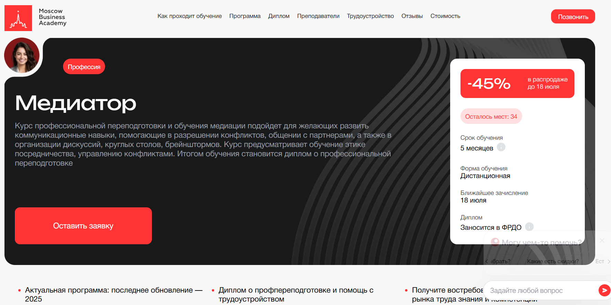
- ✅ Официальный сайт: moscow.mba
- 💸 Цена: от 128 136 ₽ (скидка 45%)
- 💳 Рассрочка: от 5 339 ₽ в месяц до 24 месяцев без переплаты
- 📚 Формат: дистанционное обучение, видеоматериалы, домашние задания, воркшопы, итоговый проект
- ⏳ Продолжительность: 5 месяцев
- 📜 Документ: выдается диплом о профессиональной переподготовке, вносится в ФРДО
- 📝 Трудоустройство: карьерные консультации, помощь с резюме и собеседованиями
- 🔷 Для кого подходит курс: для юристов, желающих решать конфликты без суда, и для тех, кто хочет стать профессиональным медиатором
Особенности:
Обучение организовано в дистанционном формате, что позволяет студентам совмещать занятия с работой и другими делами. Доступ к учебным материалам открыт 24/7, а все этапы обучения адаптированы под реальные задачи медиаторов. Курс соответствует профессиональным стандартам и требованиям рынка. Студенты осваивают навыки эффективной коммуникации, урегулирования конфликтов, а также получают поддержку преподавателей и кураторов. По завершению обучения выдается диплом установленного образца, который заносится в федеральный реестр. Академия имеет все необходимые лицензии и аккредитации, подтверждающие качество образовательных услуг. Много внимания уделяется практическим навыкам: работа с кейсами, индивидуальные задания и итоговый проект помогают закрепить знания. Успешное прохождение курса открывает путь к новой профессии и дополнительным квалификациям.
Чему учатся студенты:
- Пониманию основ и этапов процедуры медиации
- Управлению конфликтами в семейных и рабочих ситуациях
- Применению техник ведения переговоров и брейнштормов
- Развитию эмоционального интеллекта и soft skills
- Работе с психологическими аспектами конфликта
- Проведению судебной и договорной медиации
- Построению собственной карьеры в сфере медиации
Преподаватели:
- Мария Егиазарова — бизнес-психолог, выпускник МГУ, кафедра социальной психологии
- Валентина Катаниди — бизнес-тренер, сертифицированный карьерный консультант, полуфиналист «Лиги лекторов»
- Елена Королева — семейный психотерапевт, член Общества семейных консультантов и психотерапевтов РФ
Преимущества:
- Обучение проходит полностью дистанционно, что обеспечивает удобный формат
- Выдается диплом о профессиональной переподготовке, внесенный в ФРДО
- Курс дает реальные навыки для урегулирования споров и проведения процедур медиации
- Материалы курса доступны в любое время и из любой точки мира
- Программа включает в себя блоки по семейным, бизнес- и судебным медиациям
- Поддержка преподавателей и кураторов на всех этапах обучения
- Помощь в составлении резюме и выходе на рынок труда
- Возможность окупить стоимость курса уже в первые месяцы работы
Отзывы учеников:
Студенты отмечают качественное дистанционное обучение, практическую направленность и доступность всех материалов. Выпускники подчеркивают профессионализм преподавателей и поддержку кураторов. Многие выделяют, что уже после успешного прохождения курса смогли трудоустроиться и применять полученные знания в работе.
Перейти на официальный сайт курса3. 🏆 Медиация: альтернативные способы урегулирования конфликтов – Национальная академия дополнительного профессионального образования
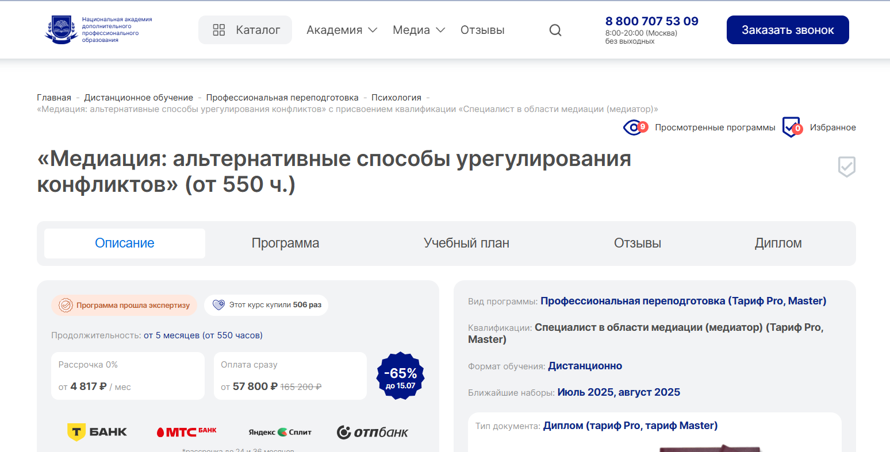
- ✅ Официальный сайт: nadpo.ru
- 💸 Цена: от 57 800 ₽ (скидка 65%, старая цена — 165 200 ₽)
- 💳 Рассрочка: 0% до 24–36 месяцев, от 4 817 ₽ в месяц
- 📚 Формат: дистанционным обучением, включает видеоуроки, практические задания, воркшопы, супервизии, проверку заданий преподавателями
- ⏳ Продолжительность: от 5 месяцев (от 550 часов)
- 📜 Документ: диплом о профессиональной переподготовке установленного образца
- 📝 Трудоустройство: бесплатный доступ к платформе для работы с клиентами, поддержка HR-специалистов, помощь в запуске частной практики
- 🔷 Для кого подходит курс: для новичков, практикующих психологов, руководителей, HR-специалистов, юристов, социальных работников
Особенности:
Программа подготовки медиаторов разработана с учетом актуальных профессиональных стандартов и проходит полностью в дистанционном формате. После успешного прохождения обучения слушатели получают официальный диплом, подтверждающий квалификацию. Благодаря включённой практике, воркшопам и супервизиям студенты осваивают реальные техники работы медиатора уже в процессе обучения. Удобный формат позволяет совмещать курс с работой. Выпускникам предоставляется доступ к образовательной платформе, где они начинают практику сразу после завершения курса. Вся учебная программа соответствует государственным образовательным стандартам и ориентирована на получение практических навыков урегулирования конфликтов.
Чему учатся студенты:
- Пониманию стадий и структуры процедуры медиации
- Использованию техник управления конфликтами и противодействия манипуляциям
- Проведению индивидуальных и групповых медиаций
- Анализу и диагностике конфликтных ситуаций
- Работе с конфликтами в различных сферах: семейных, трудовых, юридических
- Методам работы в роли медиатора, клиента и наблюдателя
- Созданию программ мастер-классов и тренингов по медиации
Преподаватели:
- Тарасов Сергей Васильевич — кандидат психологических наук, доцент, стаж с 2000 года
- Егорова Наталья Николаевна — кандидат психологических наук, более 22 лет практики
- Челнокова Ирина Александровна — кандидат психологических наук, член Российской ассоциации КПТ
- Санжапова Эльмира Викторовна — кандидат педагогических наук, доцент, опыт с 2005 года
Преимущества:
- Возможность обучаться дистанционно в любом удобном месте и темпе
- Выдается диплом, дающий право на профессиональную деятельность по всей РФ
- Программа включает более 30% практических занятий
- Гарантированная поддержка в начале карьеры медиатора
- Бесплатный доступ к библиотекам ЛитРес и Библиоклуб
- Поддержка преподавателей и консультации на всех этапах обучения
- Доступ к платформе для поиска первых клиентов
- Курс соответствует ФГОС и профессиональным стандартам
Отзывы учеников:
Студенты часто отмечают удобный дистанционный формат и высокое качество материалов. Положительно отзываются о большом количестве практики и поддержке преподавателей. Особо подчеркивают возможность сразу после окончания обучения начать принимать клиентов и получать реальный доход.
Перейти на официальный сайт курса4. Психологическое консультирование, конфликтология и медиация в социальной сфере – Московский Институт Профессионального Образования
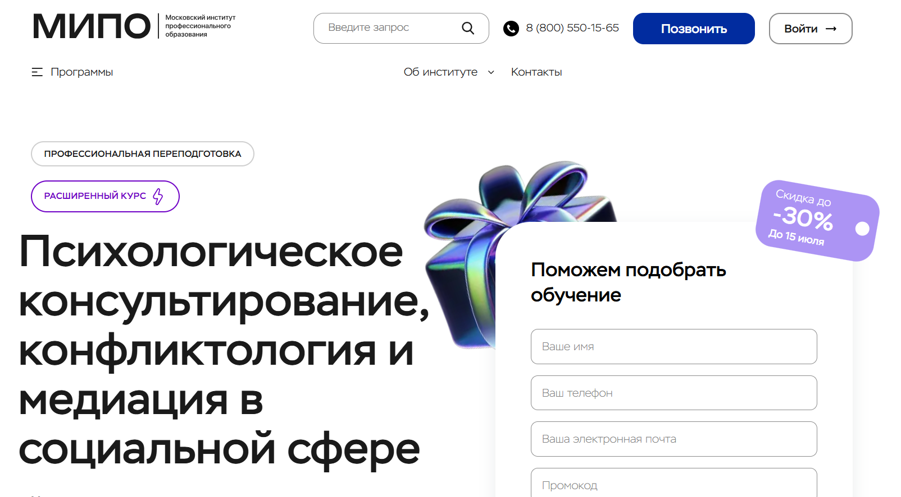
- ✅ Официальный сайт: mipo.msk.ru
- 💸 Цена: от 73 553 ₽ до 119 006 ₽ (со скидкой до -30% )
- 💳 Рассрочка: от 3 066 ₽/мес., доступна до 24 месяцев
- 📚 Формат: дистанционным обучением с применением дистанционных технологий, вебинары, разбор кейсов, видеоуроки, тесты, сопровождение куратора
- ⏳ Продолжительность: от 6 до 10 месяцев, 818 академических часов
- 📜 Документ: диплом о профессиональной переподготовке установленного образца, регистрация в ФИС-ФРДО
- 📝 Трудоустройство: помощь в профессиональном развитии, возможность удаленной практики
- 🔷 Для кого подходит курс: новичкам, желающим освоить профессию медиатора, действующим специалистам без диплома, и тем, кто хочет применять знания в личной жизни
Особенности:
Обучение проходит в удобном дистанционном формате, с возможностью совмещать учебу с работой и другими обязанностями. Курс охватывает полный цикл подготовки медиаторов — от основ психологического консультирования до углубленного изучения конфликтологии и процедур медиации. Программа выстроена на основе профессиональных стандартов и позволяет освоить востребованную профессию медиатора дистанционно. По успешном завершении студенты получают диплом установленного образца, внесенный в федеральный реестр. Применение дистанционных технологий делает формат обучения гибким и доступным в любом удобном месте. Программа включает практическую работу с кейсами, видеоматериалы и поддержку преподавателей. Это обучение для тех, кто хочет приобрести дополнительные квалификации и применить навыки в урегулировании конфликтов и семейных медиациях.
Чему учатся студенты:
- Понимать и применять процедуры медиации
- Оказывать психологическое консультирование
- Использовать методы урегулирования конфликтов
- Работать с участниками конфликтов в семейных и социальных ситуациях
- Развивать навыки эффективной коммуникации и стрессоустойчивости
Преподаватели:
- Урывчикова Татьяна Геннадьевна — клинический психолог, нейропсихолог, член ассоциации когнитивно-поведенческой психотерапии
- Перемолотова Ирина Александровна — арт-терапевт, коуч ICI, практикующий психолог
- Цяпало Анна — сертифицированный сексотерапевт, психолог, член ассоциации психоаналитического коучинга
- Миркина Елена — клинический психолог, тренер по soft-skills, президент Фонда развития человеческого потенциала
- Сальникова Дарья — специальный психолог, научный сотрудник Российской академии образования
- Балобанов Василий — семейный психолог, эксперт Первого канала, автор программы «Семейный консультант»
Преимущества:
- Полностью дистанционная форма обучения с поддержкой кураторов
- Диплом о профессиональной переподготовке, признанный в РФ и за рубежом
- Доступ к образовательной платформе с материалами и вебинарами
- Удобный график для совмещения с работой или личными делами
- Обратная связь от преподавателей через куратора и менторов
- Возможность освоения профессии медиатора с нуля
- Бесплатный гайд о методах психотерапии при регистрации
- Дополнительные курсы и бонусы в старших тарифах
Отзывы учеников:
Студенты отмечают качественное образование, профессионализм преподавателей и удобство дистанционного формата. Положительно оценивают доступность материалов и обратную связь от кураторов. Многие хвалят четкую структуру курса, полезность практических заданий и возможность совмещать обучение с работой. Выпускники подчеркивают значимость полученного диплома для развития карьеры.
Перейти на официальный сайт курса5. Медиация – Московский институт технологий и управления
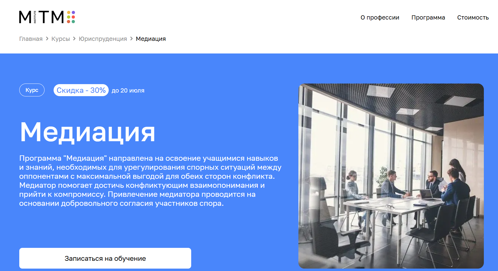- ✅ Официальный сайт: mitm.institute
- 💸 Цена: от 56 040 ₽ (со скидкой 30%).
- 💳 Рассрочка: 4 670 ₽/мес, беспроцентная на 12 месяцев.
- 📚 Формат: дистанционное обучение, видеолекции, иллюстрированные материалы, личный кабинет, записи занятий.
- ⏳ Продолжительность: 5 месяцев (возможность пройти интенсивно за 2 месяца).
- 📜 Документ: диплом о профессиональной переподготовке государственного образца.
- 📝 Трудоустройство: обучение соответствует требованиям работодателей, помощь в применении полученных компетенций.
- 🔷 Для кого подходит курс: юристы, специалисты по переговорам, сотрудники HR-отделов, начинающие медиаторы, желающие освоить новую профессию.
Особенности:
Программа предлагает профессиональную переподготовку в дистанционном формате с акцентом на практические навыки. Курс подойдет тем, кто хочет освоить профессию медиатора дистанционно без отрыва от основной деятельности. В процессе обучения используется образовательная платформа с постоянной поддержкой преподавателей. Учебный план регулярно обновляется, ориентирован на требования современных работодателей и практикующих медиаторов. По успешном завершении программы выдается диплом установленного образца. Студенты проходят обучение в любом удобном темпе, получая доступ к материалам в личном кабинете. Включены техники урегулирования конфликтов и семейных медиаций. Возможность возврата денег в течение первых двух недель делает курс доступным и безопасным выбором.
Чему учатся студенты:
- Применять технологии и принципы медиации на практике
- Анализировать конфликтные ситуации и выявлять причины споров
- Овладевать техниками ведения переговоров и профессиональной этикой
- Работать с процедурами медиации и сопровождать участников конфликта
- Понимать юридические аспекты разрешения конфликтов
Преподаватели:
- Гульнара Бигаева — автор статей в системах Гарант и Консультант+, более 18 лет практики
- Ольга Карпунина — юрист по семейному праву, опыт работы в ФАС и ФНС
- Ольга Ваганова — советник, руководитель практики в адвокатском бюро «DS LAW», юрист проекта «Ты Не Одна», лауреат рейтинга «Коммерсант»
Преимущества:
- Возможность обучаться дистанционно из любой точки мира
- Выдается диплом о профессиональной переподготовке государственного образца
- Гибкий формат обучения — совмещение с работой
- Курс построен на базе научных исследований и практического опыта
- Поддержка куратора и преподавателей на протяжении всего обучения
- Доступ к записям лекций до конца курса
- Рассрочка без переплат и возврат денег в течение двух недель
- Возможность освоить профессию медиатора дистанционно с нуля
Отзывы учеников:
Студенты выделяют удобный формат обучения, простоту подачи материала и быструю адаптацию к дистанционным технологиям. Отмечают профессиональный уровень преподавателей, поддержку кураторов и актуальность знаний. Положительно оценивают возможность совмещать обучение с работой и получать качественные знания без отрыва от реальной жизни.
Перейти на официальный сайт курса6. Конфликтология и медиация: Эффективное управление конфликтами – Национальный центральный институт развития дополнительного образования
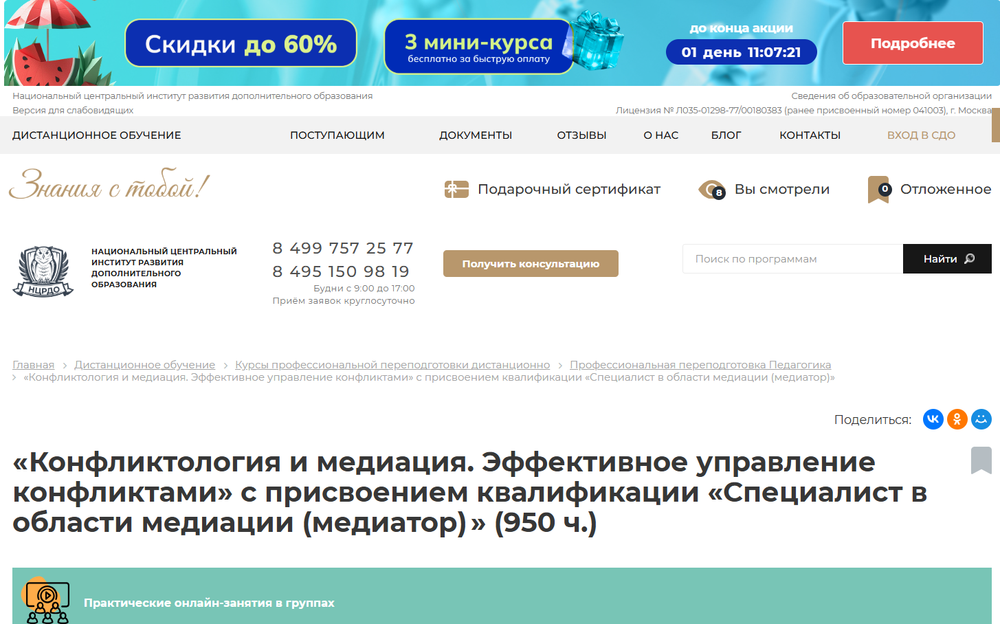
- ✅ Официальный сайт: ncrdo.ru
- 💸 Цена: 63 000 ₽ (со скидкой, ранее 117 900 ₽)
- 💳 Рассрочка: от 1 750 ₽/мес на 36 месяцев или 30% первоначальный взнос
- 📚 Формат: дистанционное обучение, онлайн-занятия, доступ к вебинарам, тесты, методички, практические задания
- ⏳ Продолжительность: 8 месяцев (950 часов)
- 📜 Документ: диплом о профессиональной переподготовке, вносится в федеральный реестр
- 📝 Трудоустройство: HR-консультации и поддержка в карьере
- 🔷 Для кого подходит курс: для выпускников вузов, специалистов с дипломом СПО, студентов, интересующихся конфликтологией, медиаторы
Особенности:
Программа полностью адаптирована под дистанционный формат и подходит для совмещения с работой или другими видами занятости. Курс позволяет освоить профессию медиатора дистанционно без отрыва от основной деятельности. Студенты изучают процедуры медиации, учатся разрешению конфликтов в семьях и на работе, получают доступ к образовательной платформе с дополнительными материалами. По успешном завершении курса выдается диплом установленного образца, подтверждающий полученные профессиональные компетенции. В учебный процесс включены этапы обучения с практическими заданиями. Обучение проходит в любое удобное время благодаря гибкому графику. Поддержка преподавателей и цифровые инструменты делают процесс усвоения материала простым и эффективным.
Чему учатся студенты:
- Диагностике конфликтных ситуаций
- Проведению процедуры урегулирования конфликтов с участием посредника
- Техникам медиации и GR-технологиям
- Работе с интересами сторон в процессе медиации
- Методам разрешения семейных и корпоративных споров
- Построению эффективной коммуникации
- Противодействию манипуляциям и управлению эмоциями
- Проведению медиаций на разных стадиях
Преподаватели:
- Мельникова Елена Васильевна — опыт научно-практической деятельности с 2010 года
- Тышкевич Марина Юрьевна — опыт с 2006 года
- Шевченко Дария Игоревна — опыт с 2018 года
- Салихова Мария Романовна — опыт с 2007 года
Преимущества:
- Обучение проводится в удобном онлайн-формате
- Выдается диплом, внесенный в федеральный реестр
- Доступ к библиотеке ЛитРес и вебинарам
- Гибкий график обучения с возможностью совмещения
- Поддержка от преподавателей и кураторов на всех этапах
- Бесплатный доступ к учебным материалам и записям лекций
- Помощь в трудоустройстве после завершения обучения
- Курс разработан на основе профессиональных стандартов
Отзывы учеников:
Слушатели отмечают удобный формат обучения, доступ к дополнительным материалам и высокий уровень преподавателей. Особенно ценится возможность получить новую квалификацию дистанционно и совмещать учебу с работой. Положительно отзываются о практической направленности заданий и поддержке специалистов на всех этапах прохождения обучения.
Перейти на официальный сайт курса7. Юриспруденция и медиация — Институт Профессионального Образования
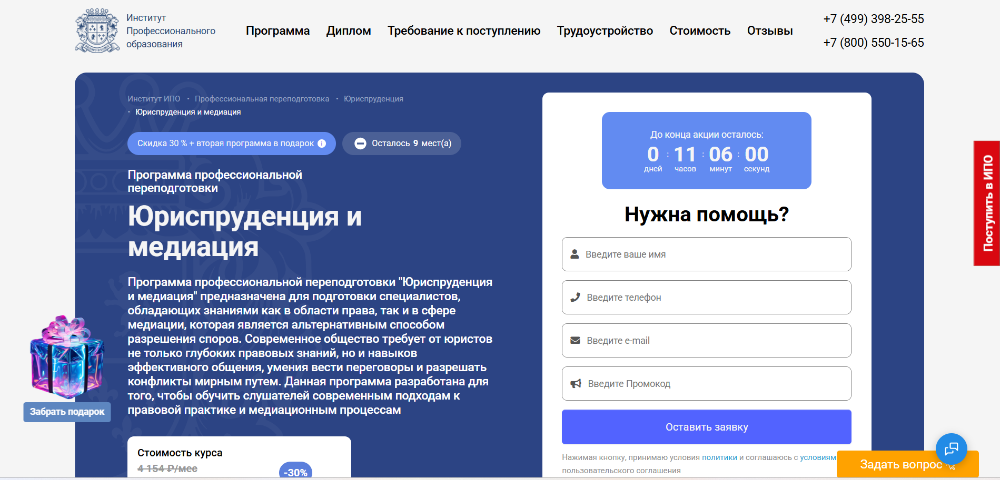
- ✅ Официальный сайт: ipo.msk.ru
- 💸 Цена: от 69 800 ₽ со скидкой 30%
- 💳 Рассрочка: от 2 908 ₽/мес на 24 месяца
- 📚 Формат: дистанционное обучение, видеоуроки, практические задания, тесты, кейсы, онлайн-вебинары, поддержка менторов
- ⏳ Продолжительность: 11 месяцев / 972 академических часа
- 📜 Документ: выдается диплом о профессиональной переподготовке установленного образца
- 📝 Трудоустройство: карьерная поддержка, помощь в составлении резюме, консультации, сопровождение
- 🔷 Для кого подходит курс: юристы, государственные служащие, преподаватели, социальные работники и все, кто хочет получить профессию медиатора
Особенности:
Программа реализуется в дистанционном формате с гибким графиком. Студенты получают доступ к образовательной платформе, где доступны лекции, домашние задания и тесты. При успешном завершении курса выдается диплом, позволяющий вести профессиональную деятельность в сфере медиации и права. Обучение проходит под руководством опытных медиаторов и юристов-практиков. Слушатели осваивают технологии разрешения конфликтов без суда, включая семейные медиации, что особенно актуально на современном рынке юридических услуг. Программа учитывает требования профессиональных стандартов и подходит для получения дополнительных квалификаций. В процессе медиации студенты учатся решать споры с участием посредника, получая ценные практические навыки.
Чему учатся студенты:
- Анализу законодательства в сфере гражданского, трудового, административного права
- Навыкам ведения переговоров и урегулирования конфликтов
- Проведению процедур медиации и составлению медиативных соглашений
- Профессиональной этике и принципам нейтральности медиатора
- Техникам управления конфликтами, стрессами и временем
- Применению дистанционных технологий в юридической практике
Преподаватели:
- Роман Александрович Шатов — выпускник юрфака МГУ, стаж работы юристом 10 лет, победитель конференции «Ломоносов-2019»
- Раскостова Рано Шадимановна — более 20 лет юридического опыта, 10 лет преподавания, работа в прокуратуре
- Оксана Александровна Меншикова — начальник юротдела АО «ГЦВ», практикующий юрист
Преимущества:
- Полностью дистанционное обучение с доступом к платформе в любое время
- Официальный диплом, признанный на территории РФ
- Помощь в трудоустройстве и карьерное сопровождение
- Возможность совмещать обучение с работой благодаря гибкому графику
- Поддержка куратора и менторов на всех этапах обучения
- Актуальный контент и регулярные вебинары с практикующими специалистами
- Дополнительные бонусы: курсы в подарок и налоговый вычет
Отзывы учеников:
Выпускники отмечают качественное дистанционное обучение, структурированный подход и практическую направленность программы. Особенно ценится гибкость формата, поддержка преподавателей и возможность применения полученных знаний в реальной практике. Платформа удобная, преподаватели отзывчивые, курс оправдывает вложения.
Перейти на официальный сайт курса8. Медиация: альтернативные способы урегулирования конфликтов – Центральная академия профессиональной переподготовки и повышения квалификации кадров (ЦАППКК)
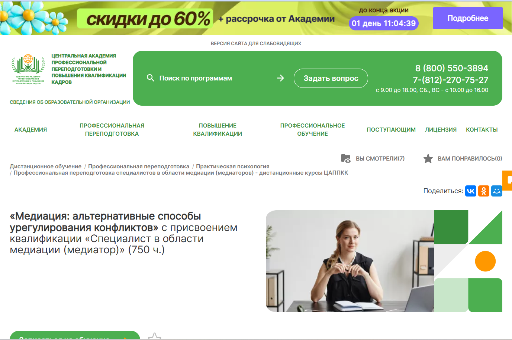
- ✅ Официальный сайт: appkk.ru
- 💸 Цена: 42 000 ₽ (вместо 57 800 ₽)
- 💳 Рассрочка: от 1 167 ₽/мес. на 36 месяцев
- 📚 Формат: заочное обучение с применением дистанционных технологий, вебинары, аудиолекции, тесты, задания, доступ к материалам 24/7
- ⏳ Продолжительность: 6 месяцев (750 часов)
- 📜 Документ: диплом о профессиональной переподготовке, заносится в ФИС ФРДО
- 📝 Трудоустройство: сопровождение HR-наставником, помощь с резюме и подборкой вакансий
- 🔷 Для кого подходит курс: для специалистов с высшим или средне-профессиональным образованием, студентов, желающих освоить профессию медиатора
Особенности:
Курс проводится полностью в дистанционном формате с возможностью учиться в любом удобном месте. Академия гарантирует бессрочный доступ ко всем учебным материалам, включая библиотеку вебинаров. После успешного завершения обучения выдается диплом установленного образца, заносимый в федеральный реестр. Слушатели получают качественное образование, поддержку преподавателей, а также сопровождение HR-наставника для карьерного роста. Программа основана на авторских методиках опытных медиаторов и соответствует требованиям образовательных стандартов.
Чему учатся студенты:
- Проводить процедуры урегулирования конфликтов
- Применять эффективные методы семейной медиации
- Разрабатывать стратегии взаимодействия между участниками споров
- Осваивать дистанционные технологии в обучении и работе
- Использовать инструменты медиатора для достижения договоренностей
- Анализировать юридические и психологические аспекты конфликтов
Преподаватели:
- Анастасия Регнер — HR-наставник, бизнес-тренер, участник международных HR-форумов, специалист по стратегическим коммуникациям, соавтор программ по рекрутингу
Преимущества:
- Полностью дистанционное обучение с доступом 24/7
- Поддержка преподавателей и HR-эксперта в течение всего курса
- Получение диплома государственного образца
- Совмещение обучения с работой или учебой благодаря гибкому графику
- Материалы курса можно сохранять и использовать даже после окончания
- Бесплатный доступ к онлайн-библиотеке и вебинарам
- Платформа подходит для студентов любого уровня подготовки
- Поддержка в поиске работы после получения диплома
Отзывы учеников:
Студенты отмечают удобный дистанционный формат, высокий уровень поддержки преподавателей, понятные учебные материалы и возможность совмещать обучение с работой. Также подчеркивается ценность диплома и помощь в трудоустройстве.
Перейти на официальный сайт курса9. Медиация: теория и практика эффективного разрешения конфликтов – Московская Бизнес Академия
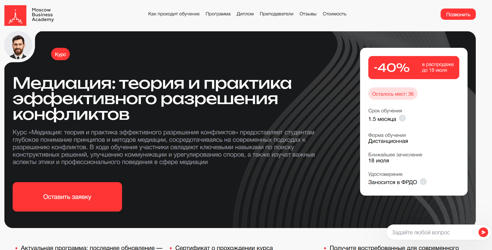
- ✅ Официальный сайт: moscow.mba
- 💸 Цена обучения: 57 720 ₽ (со скидкой 40%).
- 💳 Рассрочка: 4 810 ₽ / мес. до 12 месяцев, первый платёж — через месяц, без переплат.
- 📚 Формат: дистанционным форматом: видеоматериалы, практические задания, воркшопы, доступ к учебным материалам онлайн.
- ⏳ Продолжительность: 1.5 месяца.
- 📜 Документ: выдается удостоверение о повышении квалификации, сертификат установленного образца, запись в ФРДО.
- 📝 Трудоустройство: 65% выпускников находят работу в течение 3 месяцев после окончания обучения.
- 🔷 Для кого подходит курс: для специалистов с высшим образованием от 25 лет — юристов, психологов, желающих освоить профессию медиатора дистанционно.
Особенности:
Программа реализуется с применением дистанционных технологий, что позволяет совмещать обучение с работой и другими делами. После прохождения обучения студенты получают профессиональную подготовку по стандартам, актуальным на 2026 год. Курс охватывает этапы обучения, начиная с теоретического материала до практических занятий, направленных на освоение процедур урегулирования конфликтов. Образовательная платформа предоставляет доступ к лекциям, практическим заданиям и поддержке преподавателей. Завершения курса достаточно, чтобы начать деятельность медиаторов легально. Учебный план ежегодно обновляется, соответствуя требованиям рынка и профессиональных стандартов.
Чему учатся студенты:
- Проводить процедуры медиации и урегулирования конфликтов
- Применять активное слушание и эффективный диалог
- Находить компромиссы в сложных переговорах
- Работать с семейными конфликтами и спорами
- Анализировать юридические и этические аспекты процесса
- Применять навыки ведения переговоров в разных сферах
Преподаватели:
- Мария Егиазарова — выпускник МГУ им. Ломоносова, кафедра социальной психологии, автор тренингов по эффективному общению, бизнес-психолог, действующий преподаватель.
Преимущества:
- Курс разработан в соответствии с федеральными государственными стандартами
- Формат обучения полностью дистанционный — можно обучаться в любом удобном месте
- По завершению обучения выдается диплом установленного образца
- Слушатели получают доступ ко всем учебным материалам без ограничений
- В процессе обучения — поддержка кураторов и преподавателей
- Платформа позволяет проходить курс в удобном темпе
- Более 70% программы — практические навыки и реальные кейсы
- Возможность возврата стоимости в течение 14 дней
Отзывы учеников:
Студенты Московской Бизнес Академии отмечают качественное дистанционное обучение, поддержку преподавателей, полезный и структурированный учебный материал. Часто выделяют удобный формат, возможность совмещать с работой и высокий уровень подготовки медиаторов. Выпускники подчеркивают практическую направленность программы и её применимость в реальных ситуациях.
Перейти на официальный сайт курса10. Медиация: альтернативные способы урегулирования конфликтов – Национальный центральный институт развития дополнительного образования
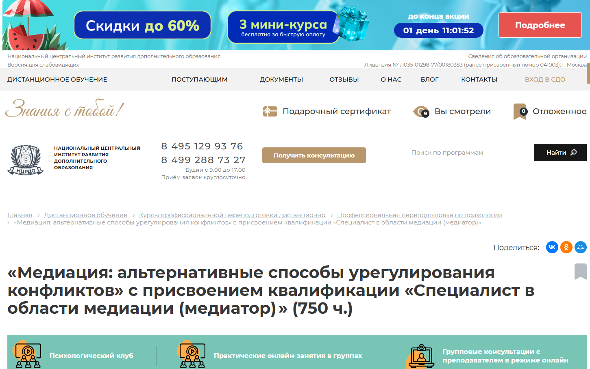- ✅ Официальный сайт: ncrdo.ru
- 💸 Цена: 48 900 ₽ (со скидкой, полная цена 109 800 ₽)
- 💳 Рассрочка: от 1 358 ₽ в месяц на 36 месяцев
- 📚 Формат: дистанционное обучение, видеолекции, аудиоуроки, практические задания, онлайн-консультации, тесты
- ⏳ Продолжительность: 6 месяцев (750 часов)
- 📜 Документ: диплом о профессиональной переподготовке установленного образца
- 📝 Трудоустройство: доступ к HR-консультациям и помощь в поиске работы
- 🔷 Для кого подходит курс: для специалистов с высшим или средним профессиональным образованием, студентов, желающих получить профессию медиатора
Особенности:
Обучение полностью организовано в дистанционном формате с применением современных образовательных технологий. Все материалы доступны онлайн в личном кабинете, включая тексты лекций и аудиофайлы. Слушатели проходят подготовку медиаторов с упором на практические навыки и реальные кейсы, включая семейные конфликты и трудовые споры. Обучение позволяет совмещать профессиональную деятельность с получением новой квалификации. После завершения курса участники получают диплом о профессиональной переподготовке, данные которого вносятся в федеральный реестр. Возможность сдачи промежуточных тестов без ограничений и три попытки на итоговое тестирование делают формат обучения удобным и гибким.
Чему учатся студенты:
- Понимать этапы медиации и специфику различных видов конфликтов
- Применять процедуры урегулирования споров в досудебном порядке
- Изучать основы конфликтологии, психологии личности и GR-технологии
- Развивать навыки ведения переговоров и конструктивного диалога
- Работать с семейными конфликтами, трудовыми и экономическими спорами
- Овладевать методами разрешения конфликтных ситуаций
Преподаватели:
- Мельникова Елена Васильевна — опыт с 2010 года
- Тышкевич Марина Юрьевна — опыт с 2006 года
- Шевченко Дария Игоревна — опыт с 2018 года
- Салихова Мария Романовна — опыт с 2007 года
Преимущества:
- Удобный дистанционный формат обучения с гибким графиком
- Присвоение квалификации «Специалист в области медиации»
- Доступ к дополнительным материалам, библиотеке и вебинарам
- Возможность совмещения с работой или другим обучением
- Поддержка кураторов и преподавателей на всех этапах обучения
- Рассрочка без процентов на весь срок обучения
- Диплом вносится в федеральный реестр
- Практическая подготовка через реальные кейсы
Отзывы учеников:
Студенты подчеркивают удобный формат обучения и доступность материалов. Отмечают профессионализм преподавателей и возможность применять полученные навыки сразу после прохождения курса. Особо ценится диплом установленного образца и официальная регистрация в федеральной базе.
Перейти на официальный сайт курса11. Медиация – Учебный центр АПОК
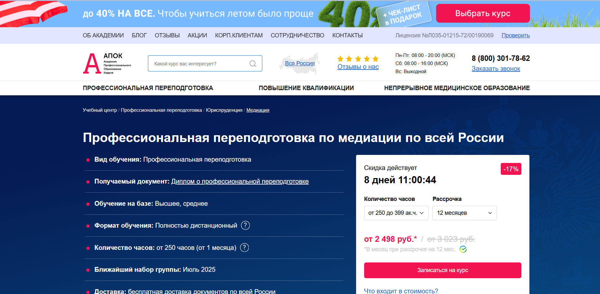- ✅ Официальный сайт: apokdpo.ru
- 💸 Цена обучения: от 29 980 ₽ (со скидкой -17% ).
- 💳 Рассрочка: до 12 месяцев, от 2 498 ₽ в месяц без переплат.
- 📚 Формат: полностью дистанционным форматом с доступом к учебным материалам, видеоурокам, заданиям и итоговой аттестацией.
- ⏳ Продолжительность: от 1 месяца (от 250 часов).
- 📜 Документ: выдается диплом о профессиональной переподготовке, регистрируется в ФИС ФРДО.
- 📝 Трудоустройство: повышение квалификации и карьерный рост по результатам прохождения обучения.
- 🔷 Для кого подходит курс: для специалистов с высшим или средним профессиональным образованием, желающих получить профессию медиатора дистанционно.
Особенности:
Программа обучения построена с упором на практические навыки и ориентирована на применение в реальных кейсах. Студенты осваивают профессию медиатора через дистанционное обучение в любом удобном месте, не прерывая основную деятельность. Форматом обучения предусмотрено пошаговое освоение дисциплин, что позволяет успешно пройти курс даже без опыта. Учащиеся получают доступ к образовательной платформе с поддержкой преподавателей. По завершении курсов, выдается диплом установленного образца. Программа подходит для работы в сфере семейных медиаций и урегулирования конфликтов. Возможна персонализация учебного плана под конкретные цели слушателя. Документы доставляются в любой регион России бесплатно.
Чему учатся студенты:
- Навыкам урегулирования конфликтов с участием посредника
- Техникам ведения переговоров и эффективной коммуникации
- Психологии конфликтов и принятию решений
- Пониманию юридических основ процедуры медиации
- Применению стандартов профессиональной деятельности медиаторов
- Прогнозированию и анализу конфликтных ситуаций
Преподаватели:
- Селезнёва Мария Анатольевна — заместитель методического отдела, автор программы «Медиация»
Преимущества:
- Дистанционное обучение с гибким графиком и доступом к платформе 24/7
- Возможность бесплатно изменить учебный план по желанию
- Выдается диплом с регистрацией в федеральном реестре ФИС ФРДО
- Доставка итоговых документов в любой регион страны
- Программа одобрена и лицензирована Министерством образования
- Скидки для семей, повторных студентов и при комплексном обучении
- Возможность ускоренного завершения обучения
- Курс рассчитан на применение в работе медиатором и разрешении семейных споров
Отзывы учеников:
Слушатели отмечают удобный формат дистанционного обучения, профессиональную подготовку преподавателей и быструю поддержку на всех этапах обучения. Высоко ценится возможность совмещать обучение с работой и получение диплома государственного образца. Студенты отмечают практическую пользу курсов для реальной работы в семейных медиациях.
Перейти на официальный сайт курса12. Медиация — ЭКОДПО — Учебный центр дополнительного профессионального образования
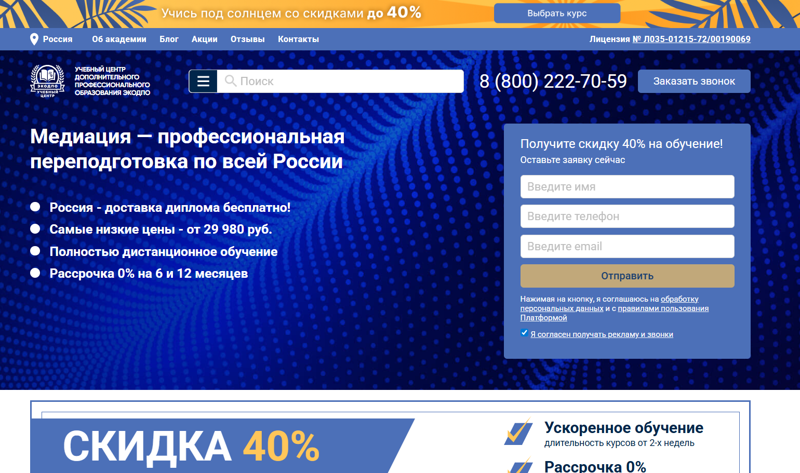
- ✅ Официальный сайт: ecodpo.ru
- 💸 Цена: от 29 980 ₽ (в зависимости от тарифа — Эконом, Стандарт или VIP)
- 💳 Рассрочка: от 2 498 ₽/мес., 0% на 6 или 12 месяцев от СБЕР и Тинькофф
- 📚 Формат: полностью дистанционное обучение с доступом к лекциям, тестам и методическим материалам 24/7
- ⏳ Продолжительность: от 1,5 до 4 месяцев (от 250 часов); индивидуальный график
- 📜 Документ: диплом установленного образца о профессиональной переподготовке
- 📝 Трудоустройство: диплом принимается при устройстве в юридические и медиационные центры
- 🔷 Для кого подходит курс: юристы, специалисты с высшим или средним профобразованием, желающие получить квалификацию медиатора дистанционно
Особенности:
Курс проводится с применением дистанционных технологий, что позволяет обучаться в удобном формате без посещения офиса. Обучение подходит для тех, кто хочет получить профессию медиатора с дипломом без отрыва от основной деятельности. После прохождения курсов выдается диплом, внесённый в ФИС ФРДО. Благодаря дистанционному формату можно обучаться из любого региона России, а диплом доставят бесплатно. Ускоренное прохождение — от 2 недель. Также предусмотрены индивидуальные программы под задачи клиента и бесплатная пересдача итоговой аттестации.
Чему учатся студенты:
- Методам урегулирования конфликтов и ведения переговоров
- Психологии конфликтов и юридической этике медиаторов
- Анализу конфликтных ситуаций и прогнозированию их развития
- Психологическим подходам и GR-технологиям в разрешении споров
- Профессиональным стандартам в медиации
Преподаватели:
- ФИО преподавателей не указаны на сайте. Занятия ведут опытные тренеры-медиаторы с профильным образованием и практикой
Преимущества:
- Дистанционное обучение с доступом к платформе 24/7
- Без вступительных экзаменов — достаточно базового образования
- Бесплатная пересдача итогового тестирования
- Доставка диплома по всей России без доплат
- Гибкий график обучения
- Индивидуальные программы под задачи клиента
- Поддержка кураторов и преподавателей
- Соответствие 273-ФЗ и внесение диплома в ФИС ФРДО
Отзывы учеников:
Студенты часто отмечают удобный дистанционный формат, возможность совмещать обучение с работой, быстрое получение диплома и помощь от кураторов. Особенно выделяют практические знания и актуальность материала для реальной юридической деятельности.
Перейти на официальный сайт курсаКто такой медиатор?
Медиатор — это нейтральный посредник, который помогает сторонам конфликта прийти к взаимоприемлемому решению без обращения в суд. В отличие от судьи, медиатор не выносит решение, а способствует диалогу и поиску компромисса.
Медиация активно применяется в бизнесе, семейных спорах, трудовых конфликтах, а также в образовательной и медицинской сферах. Главная задача медиатора — снизить напряженность и помочь сторонам услышать друг друга.
Что делают медиаторы и чем занимаются?
Работа медиатора многогранна. Он не только проводит переговоры, но и занимается подготовкой сторон к конструктивному диалогу. Медиаторы могут работать как самостоятельно, так и в составе юридических компаний, в судах или государственных учреждениях.
- Анализируют суть конфликта и интересы сторон
- Организуют и проводят сессии медиации
- Помогают сформулировать соглашения и зафиксировать их юридически
- Обеспечивают соблюдение принципов конфиденциальности и добровольности
- Работают с эмоциями сторон, управляют коммуникацией
Профессиональный медиатор умеет не только улаживать споры, но и предотвращать их возникновение, что делает его работу особенно ценной в крупных компаниях и организациях.
Что должен знать и уметь медиатор?
Медиатор — это не просто хороший коммуникатор, это специалист с определенным багажом знаний и навыков.
- Основы психологии и конфликтологии
- Навыки активного слушания и управления эмоциями
- Юридические аспекты заключения соглашений
- Методики проведения переговоров и фасилитации
- Способность сохранять нейтралитет и непредвзятость
Также медиатор должен уметь работать с группами, понимать динамику конфликта и иметь высокую стрессоустойчивость.
Востребованность и зарплаты медиаторов в России
Профессия медиатора продолжает набирать популярность, особенно в контексте развития альтернативных способов разрешения споров. Государственные инициативы по внедрению медиации в судебную систему также способствуют росту спроса на специалистов.
- Средняя зарплата медиатора в России — от 70 000 до 150 000 рублей в месяц
- В крупных городах (Москва, Санкт-Петербург) доход может превышать 200 000 рублей
- Фрилансеры за одну успешную медиацию получают от 10 000 до 50 000 рублей
Особенно востребованы медиаторы в сфере бизнеса, семейных отношений и образовательных учреждений.
Как стать медиатором и где учиться?
Чтобы стать медиатором, не обязательно иметь юридическое образование, но оно будет преимуществом. Главное — пройти специализированную подготовку в аккредитованных центрах.
- Пройти базовый курс подготовки медиаторов (от 120 часов)
- Получить сертификат установленного образца
- При необходимости пройти дополнительное обучение по семейной или школьной медиации
Обучение можно пройти в университетах, юридических школах, а также в частных обучающих центрах, аккредитованных Минюстом РФ.
Где может работать медиатор?
После получения сертификата медиатор может выбрать один из нескольких карьерных путей.
- Суды и государственные учреждения
- Частные юридические и консалтинговые компании
- Образовательные учреждения (школьные и студенческие медиации)
- Социальные службы и НКО
- Фриланс и собственная практика
Многие медиаторы совмещают эту деятельность с работой юриста, психолога или HR-специалиста.
Плюсы и минусы профессии
Как и любая профессия, работа медиатора имеет свои сильные и слабые стороны.
- Плюсы: высокая востребованность, возможность удаленной работы, помощь людям, достойная оплата, интересные кейсы
- Минусы: эмоциональная нагрузка, необходимость постоянного обучения, нестабильность дохода на старте
Тем не менее, для многих медиаторов плюсы значительно перевешивают минусы, особенно при наличии призвания к этой работе.
Что такое обучение на медиатора и зачем оно нужно?
Обучение на медиатора — это профессиональная подготовка специалистов, которые помогают сторонам урегулировать споры мирным путем. Такой формат обучения формирует навыки переговоров, конфликтологии, психологии общения и альтернативного разрешения конфликтов. Программа позволяет получить компетенции, необходимые для работы в юридической, корпоративной, семейной, школьной и коммерческой сферах.
Какие задачи решает профессиональная подготовка медиаторов?
Программа обучения медиаторов направлена на развитие умения управлять конфликтами, проводить структурированные переговоры, создавать безопасное пространство для диалога и находить взаимовыгодные решения. Также обучение развивает навыки деэскалации конфликтов и анализа интересов сторон.
Какие существуют требования для поступления на обучение медиаторов?
Как правило, для начала обучения медиаторам требуется среднее профессиональное или высшее образование. Также приветствуется опыт работы в сферах права, психологии, HR или управления персоналом. Некоторые программы допускают обучение без профильного опыта.
Сколько длится обучение?
Длительность зависит от формата курса: базовые программы занимают от 40 до 120 академических часов, продвинутые — от 6 месяцев до 1 года. Расширенные профессиональные программы могут длиться до 18 месяцев.
Какие навыки получает специалист после обучения медиатора?
После прохождения обучения медиатор осваивает такие навыки, как:
- ведение переговоров и управление конфликтами;
- анализ интересов сторон и структурирование диалога;
- психология влияния и эмпатичное слушание;
- нейтральность и беспристрастность;
- создание медиативных соглашений.
Какие модули включает обучение по медиации?
Обычно программа включает модули по конфликтологии, коммуникативным техникам, этике медиатора, юридической базе, психологии конфликтов, фасилитации групп, практике ведения медиации и супервизии.
Где можно пройти обучение на медиатора?
Пройти обучение можно в специальных центрах медиации, университетах, частных школах переговоров, онлайн-платформах и профессиональных ассоциациях. Важно выбирать аккредитованные программы, признанные государством или профильными сообществами медиаторов.
Можно ли пройти обучение онлайн?
Да. Многие школы предоставляют дистанционные программы. Онлайн-формат включает лекции, вебинары, практические кейсы, ролевые игры и супервизию. Современные методики позволяют эффективно освоить навыки медиации удаленно.
Кому подходит обучение на медиатора?
Профессия подходит юристам, психологам, социальным работникам, HR-специалистам, педагогам, руководителям, коучам, менеджерам по работе с персоналом — всем, кто работает с людьми и сталкивается с конфликтами.
Как проходит практика на курсах медиаторов?
Практическая часть обычно включает ролевые медиации, моделирование конфликтных ситуаций, супервизию и наставничество. Студенты получают обратную связь от преподавателей и осваивают медиацию в реальных кейсах.
Какие документы выдают после обучения медиатора?
В зависимости от программы выдают удостоверение о повышении квалификации, сертификат медиатора, диплом о профессиональной переподготовке или свидетельство об окончании специализированного курса.
Можно ли работать медиатором без профильного образования?
Для профессиональной деятельности желательно иметь специализированную подготовку. Законодательство рекомендует наличие обучения в объеме не менее 120 часов, чтобы корректно и профессионально проводить процедуру медиации.
Какие карьерные возможности открывает обучение по медиации?
После обучения можно работать в центрах медиации, юридических компаниях, образовательных учреждениях, HR-отделах, государственных организациях, а также открыть частную практику медиатора.
Какие преимущества у профессии?
Основные преимущества: высокий спрос, востребованность навыков в различных сферах, возможность удаленной работы, высокий уровень доверия клиентов, гибкость графика и возможность создавать собственные проекты в области конфликтологии и переговоров.
Какие виды медиации изучают на курсах?
Студенты изучают семейную, школьную, корпоративную, коммерческую, трудовую, межличностную, административную медиацию, а также фасилитацию групп и переговорные стратегии.
Нужна ли сертификация после обучения на медиатора?
Хотя сертификация не всегда обязательна, она значительно повышает доверие клиентов. Медиаторы часто проходят дополнительную аккредитацию в профессиональных ассоциациях, чтобы подтвердить уровень компетенции.
Как выбрать программу обучения?
При выборе курса важно учитывать длительность, практическую направленность, уровень преподавателей, наличие супервизии, аккредитацию, отзывы выпускников и возможность дальнейшего профессионального роста.
------------------------------------------------
Реклама. Информация о рекламодателе по ссылкам в статье.